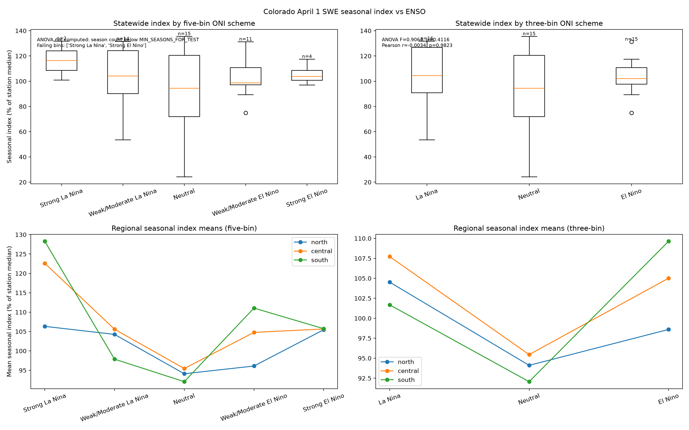

Key finding
ENSO Phase Does Not Significantly Drive Colorado Snowpack
(1979–2024)
(not significant)
(means, % of median)
(weak positive)
4-Panel Composite
Colorado April 1 SWE × ENSO Phase (1979–2024)

Per-Phase Statistics
April 1 SWE Detail by ENSO Phase
| ENSO Phase | n | Mean (%) | Median (%) | Std Dev | Range | % Below Median |
|---|---|---|---|---|---|---|
| El Niño | 11 | 106.1 | 108.0 | 28.0 | 57–153 | 45 % |
| Neutral | 22 | 102.1 | 101.0 | 20.0 | 66–155 | 41 % |
| La Niña | 13 | 93.5 | 93.0 | 15.2 | 65–118 | 62 % |
One-way ANOVA: F = 1.18 | p = 0.32 (not significant at α = 0.05) · Download full stats (.txt)
Methodology
Data Sources & Methods
Snowpack data: NRCS National Water and Climate Center statewide Colorado April 1 SWE percent-of-median values, water years 1979–2024 (46 winters). Values represent the statewide average of all active Colorado SNOTEL stations weighted by the 1991–2020 reference period.
ENSO classification: NOAA Climate Prediction Center Oceanic Niño Index (ONI). Water-year ENSO phase is determined by the October–March average ONI: El Niño ≥ +0.5 °C, La Niña ≤ −0.5 °C, Neutral otherwise. This Oct–Mar window covers the core precipitation season for Colorado snowpack accumulation.
Statistics: One-way ANOVA tests for a mean difference
across the three ENSO bins. Simple linear regression estimates the
ONI–SWE correlation. All analysis is reproducible via
colorado_snowpack_enso.py.
Interpretation
Why the Signal Is Weak
ENSO teleconnections to the American West are strongest in California and the Southwest Desert. For Colorado's high-country basins, the dominant moisture pathways—Gulf of Mexico moisture surges, Pacific storm tracks deflected by the Rockies, and local orographic enhancement—operate largely independently of tropical Pacific sea-surface temperatures.
La Niña does nudge the statewide mean downward (~12 percentage points below El Niño), but the within-phase standard deviations (15–28 pp) swamp that signal. Individual La Niña winters have ranged from 65 % to 118 % of median. The 2021–22 La Niña produced below-average snowpack; the 2020–21 La Niña produced well-above-average.
Bottom line: ENSO phase alone is a poor predictor of whether Colorado will have a good or bad snow year. Operational forecasters rely on multi-model seasonal outlooks that incorporate additional teleconnections (AO, PDO, AMO) and subseasonal variability rather than ENSO alone.